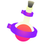
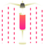

| 主要副武器实用度分析 | |||||
|---|---|---|---|---|---|
| 副武器类型 | 说明 | 速度 | 躲避指数 | 战场意外指数 | 推荐指数 |
 冰壶 |
甩出后可以以潜行状态跟随其划过的墨水轨迹快速潜行突进，适合远距离快速奔袭的场景。 同时，由于其具备冰壶球那样的碰撞弹跳特性，适合在狭窄区域进行投掷攻击。如果你被堵到角落里，真要祈祷不要碰到冰壶炸弹。 |
快 | ★★★ | ★★★★★ | ★★★★★ |
 小鸡 |
具备自动跟踪能力的小鸡机器人炸弹。 如果见识过敌方多人同时扔出多个机器人炸弹来围剿你的场景，你肯定会对这个炸弹印象深刻的。 |
慢 | ★★★★ | ★★ | ★★★ |
|
水球 |
高手砸脸专用的武器。 | 快 | ★★ | ★★★ | ★★★★ |
|
三角雷 |
具有碰撞弹跳效果和一定延迟引爆的手雷，当它出现在你脚下的时候，你多半离挂不远了。 | 快 | ★★ | ★★★ | ★★★★ |
|
粘弹 |
可以吸附在战场中诸如墙壁等特殊地形上的延迟炸弹，具有一定威慑敌人强迫退散的效果。由于延迟时间相对较长，高手可以轻易进行躲避。运用不好的话，经常关键时刻扔不到想要的目标之上，导致贻误战机。 | 慢 | ★★★★ | ★★★ | ★★★★ |
|
 毒雾 |
通常用于在狭窄通道上达到短时封路的效果，对方进入毒雾后移动速度和血量都会减少。由于杀伤力不强，用好了战术意义较大。 | 快 | ★★★★ | ★★ | ★★ |
 陷阱 |
唯一的优点是隐蔽性，只有正好踩到埋雷点才会触发。但由于杀伤力不强，所以实战中甚少被这种雷干死。 | - | ★★★★ | ★★ | ★★ |
 跳点 |
可以偷偷埋在对方老家附近的利器，只要投放的位置够好，可以对战局的控制有出人意料的作用（需要在地图中用右摇杆选择位置进行超级跳跃）。 | - | - | ★★★ | ★★ |
 花洒 |
如果能投射到不容易被攻击到的高处，对敌人的战斗发挥也能产生一定作用。如果投射到地面或低矮处，在实战中的作用就比较一般了。 | - | - | ★★ | ★★ |
|
 雨帘 |
一般多是用来封路或延缓敌方进攻时使用。 | - | - | - | ★★ |
 套环 |
投掷后可以得知附近对手位置的感应装置（使隐游效果无效），监测的结果同时会出现在我方同队的雷达中。 | - | - | - | ★ |
{kind=link}
{kind=link}
{kind=link}
{kind=link}
{kind=link}